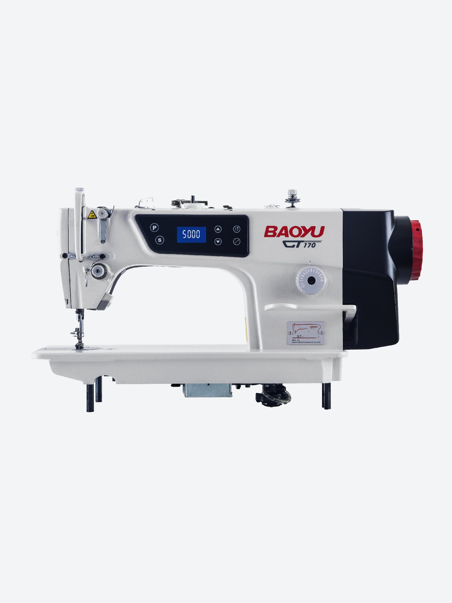

Назад
Описание:Baoyu GT-170 — это универсальная и мощная швейная машинка для дома и профессиональных мастерских. Подходит для работы с различными тканями и выполняет широкий спектр швейных операций./p>
Характеристики:
- Скорость шитья: до 1000 стежков в минуту
- Типы строчек: 15-20, включая декоративные
- Автоматическое обрезание нити
- Регулировка длины и ширины стежка
Цена: 250$